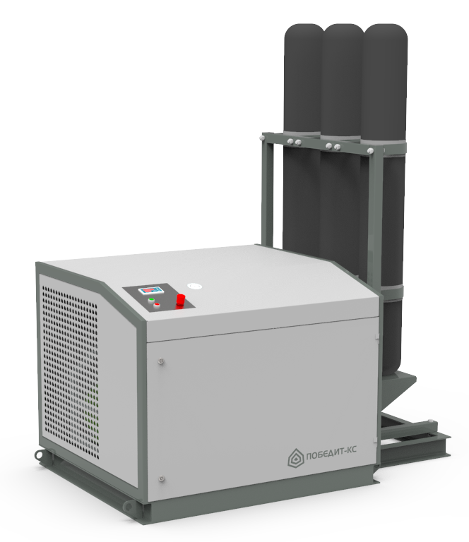

ПОБЕДИТ-КС
Компрессорные станции ПОБЕДИТ-КС используются в качестве источников давления воздуха от 6,4 до 40 МПа при проведения пневматических испытаний трубопроводной арматуры, баллонов для сжатых газов и других сосудов, работающих под давлением;
В качестве самостоятельного источника давления.